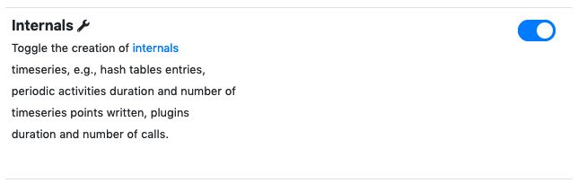
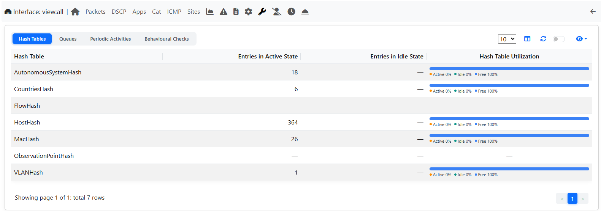
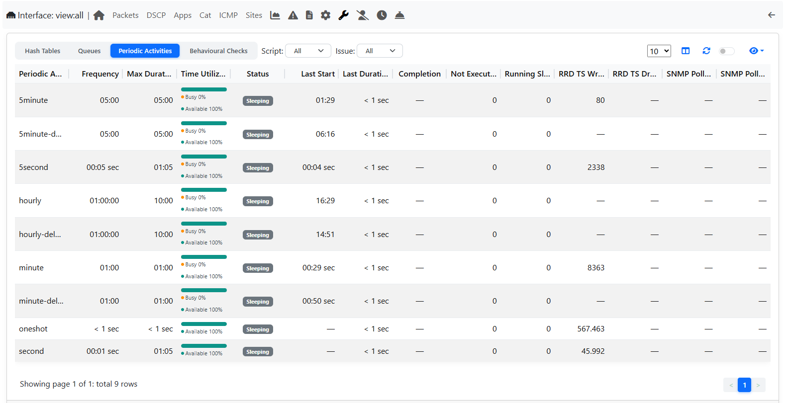
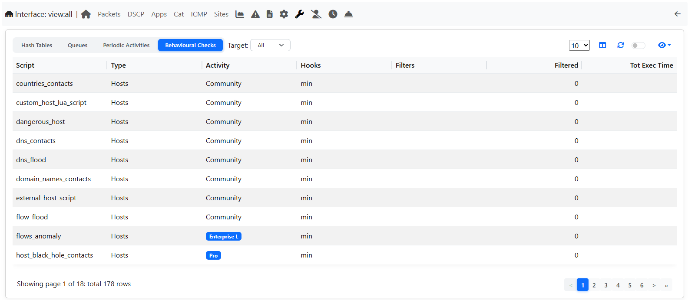
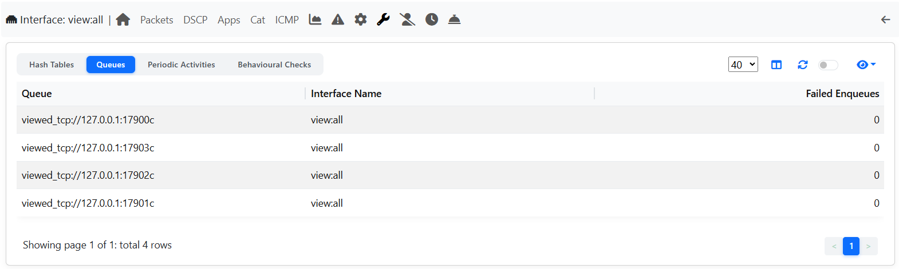

System

System Interface
The page has the tabs Overview, Historical Data and Internals.
The Overview is refreshed every 5 seconds and shows:
System: CPU load, CPU states (time waiting for the disk, active and idle) and memory usage of the machine;
ntopng: the process ID (PID), the memory used by ntopng, the alerts (queries, stored and dropped) and the storage usage. The storage bar shows how much of the disk each interface uses, how much the rest of the system uses and how much is available; click an interface name to open it. When the recorded traffic (pcap files) is on another disk, a second bar shows that disk;
Last Log Trace: the last lines of the ntopng log, with errors and warnings highlighted, useful for debugging. Administrators can download the log of the last day. The log is not shown in OEM versions.
Click the chart icon next to a value to open its chart in the Historical Data tab (see Historical Charts). The chart icons and the Historical Data tab are disabled when the system timeseries are disabled in the ntopngPreferences (Timeseries->System Probes).
The Internals tab shows the state of the ntopng queues, periodic activities and behavioral checks of the system (see Internals).
Historical Charts
The Historical Charts page displays charts with performance metrics for the ntopng process itself.
ntopng records CPU utilization for the system and for each of its internal threads at 5-second granularity.
A per-thread CPU load chart is available under the Threads CPU Load entry and shows how CPU time is distributed across the individual threads (e.g. packet processing, periodic activities, etc.). Monitoring per-thread CPU load is useful to correlate CPU spikes with specific ntopng activities and diagnose performance bottlenecks when ntopng is under heavy traffic load.
Internals
Internals expose status and health of certain ntopng components. Internal components are:
Hash Tables
Periodic Activities
Checks
Information exposed is accessible from the Internals tab of any interface - including the System Interface and the Interfaces page of the Health menu, which shows the internals of all the interfaces together - and is discussed in detail below for each component.
Internals timeseries generation is of by default and can be enabled from Preferences->Timeseries->Internals.

Internals Timeseries
Hash Tables
ntopng uses hash tables to keep active network elements in memory. Hosts are kept in the Hosts hash table, flows are kept in the Flows hash table, and so on.
To ensure smooth functionalities, ntopng hash tables must:
Have enough room to keep all the active network elements.
Have enough room to accommodate new network elements that may arrive.
Be not so full to reduce collisions.
In addition, every network element in a hash table must:
Be considered active and updated periodically if it has network traffic associated.
Be considered idle, removed from the hash table, and deleted from memory when its traffic is no longer seen.
Failing to meet one or more of the conditions will almost surely cause ntopng to malfunction. Under normal circumstances, such conditions are verified but may fail due to:
ntopng misconfiguration, especially when Operating ntopng on large networks which require fine tuning
ntopng bugs
Aim of the Hash Tables internals table is to monitor hash tables and hash table entries to check and possibly highlight the issues above.

Internals: Hash Tables
Information shown in the table columns is:
Hash Table: The name of the hash table.
Chart: A link to the historical chart of hash table idle and active entries over time.
Entries in Active State: The total number of network elements that are currently active in the hash table.
Entries in Idle State: The total number of network elements that are currently idle but waiting to be removed from the hash table and deleted from memory.
Hash Table Utilization: The total number of active and idle network elements in the hash table, with reference to the total number of network elements the hash table can accommodate.
Information shown is useful to troubleshoot the following issues:
Network elements that are idle but are not being removed from the hash table: This can exhausts hash table room and prevent new elements to be inserted. In this case, column Entries in Idle State will have a value comparable to, or even greater than, Entries in Active State. Having this issue means ntopng cannot remove idle elements with a sufficient speed and it should not happen.
The hash table is almost full: This degrades ntopng performances as hash table accesses become slower and it can also prevent new elements from being inserted into the hash table. In this case, the bar in column Hash Table Utilization will be composted mostly of Active entries. Increasing the number of hosts and flows as described in Operating ntopng on large networks can solve.
Periodic Activities
Periodic activities are Lua scripts executed by ntopng at regular intervals of time. Lua scripts are found in the checks. They can be run, in parallel, for each interface or for the system. Periodic activities include, but are not limited to:
Timeseries generation.
Execution of Checks as described in WebUIUserScripts.
Handling idle and active hash table entries as described in Hash Tables.
Multiple threads are available for the execution of periodic activities. A thread executes one periodic activity at time. Multiple periodic activities are executed sequentially by the same thread. Multiple parallel threads execute multiple periodic activities simultaneously.
Each periodic activity has a frequency associated, that is, how often it needs to be executed. It also has a max duration, that is, the maximum execution time. For example, a periodic activity with frequency 5 and max duration 10 is executed every 5 seconds. Once in execution, it can take up to 10 seconds to complete. Assuming the activity actually takes 9 seconds to complete, this is what happens:
At time t=0 the periodic activity is executed.
At time t=5 the periodic activity is running so nothing is done, no new execution starts.
At time t=9 the periodic activity completes its execution.
At time t=10 the periodic activity is executed.
…
To ensure smooth functionalities, periodic activities must:
Always take less than max duration to complete.
Be executed according to their frequency.
Not drop alerts.
Failing to meet one or more of the conditions above can cause ntopng to malfunction. Normally, conditions are are verified. However, such conditions may fail when:
All threads are busy so no one can execute a periodic activity ad the right frequency.
A bug is causing a periodic activity to take more than its max duration to complete.
A user activity is executing too many Checks that make it slow.
Too many alerts are being generated and the export cannot keep up with the generation.
Aim of the Periodic Activities internals table is to monitor the execution of periodic activities to check and possibly highlight the issues above.

Internals: Periodic Activities
Information shown in the table columns is:
Periodic Activity: The name of the periodic activity. Name equals the file name of the periodic activity Lua script which can be either found under the system periodic activities, interface periodic activities, or both.
Frequency: How often a periodic activity has to be executed.
Max Duration: How long the periodic activity execution can take.
Chart: A link to the historical charts of the periodic activity.
Time Utilization: Periodic activity execution time, with reference to the Max Duration.
Status:
sleepingif the activity has completed and is waiting for the next execution,queuedif the activity has been scheduled for execution but it isn’t running yet,runningif the activity is currently in execution.Last Start: Indicates when the periodic activity was started the last time.
Last Duration: Indicates the most recent periodic activity execution time. If the activity is
runningindicates the current execution time.Completion: Is a percentage indicating the completion of the periodic activity. A slow periodic activity which would take more than Max Duration to complete, will not reach a 100% completion.
TS Writes: The total number of timeseries points written by the periodic activity.
TS Drops: The total number of timeseries points dropped by the periodic activity as writes were failing or slow.
Not Executed: Counts the number of times a periodic activity wasn’t scheduled for execution, either because it was already running (running slow) or already scheduled (no thread was available to execute it).
Running Slow: Counts the number of times a periodic activity was taking more than Time Utilization to complete.
Degraded Performance
When ntopng detects issues with periodic activities, it shows a triangle left to the periodic activity name. Hovering the mouse on the triangle prints the description of the ongoing issue. A yellow triangle is also shown at the top of every page. Clicking on the triangle opens a page with a summary of all the periodic activities with issues.
Degraded performance can be temporary. The triangle shown at the top of every page and triangles shown left to periodic activity names indicate currently ongoing issues and disappear if no issue is currently occurring.
Periodic activities with issues also have their alerts. Alerts are engaged when the issue is ongoing, or past when the issue is no longer occurring.
Periodic activities are in charge of running script checks.
Checks
Checks are part of ntopng scripts. They are executed periodically or when a certain event occurs.
Aim of the Checks internals table is to monitor the execution of scripts.

Internals: Checks
Information shown in the table columns is:
Check: The name of the check which is executed.
Target: The target of the check, either an host, a flow or one of the other targets.
Hook: One of the Check Hooks.
Last Num Calls: The number of times the check has been called the last time a periodic activity has executed it.
Last Duration: The total duration of the check, computed as the sum of the duration of any of its Last Num Calls.
Information shown is useful to troubleshoot the following issues:
Troubleshoot periodic activities with Degraded Performance: A periodic activity may be slow because it is executing too many checks. Combining data from the Periodic Activities internals table with this table can highlight this condition.

ntopng Activities